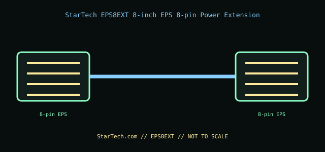

[ INTERNAL PC POWER CABLE // MODEL-SPECIFIC RECORD ]
StarTech EPS8EXT 8-inch EPS 8-pin Power Extension
StarTech.com manufacturer part EPS8EXT. This record documents only this specified cable assembly; connector fit is not evidence of a matching pinout or PSU compatibility.

PSU SAFETY: Modular PSU-side cable pinouts are proprietary and model-family-specific. Never substitute a modular cable by brand, connector fit, color, or appearance; use only the exact PSU maker-approved cable for the exact PSU model and revision.
Manufacturer specifications
| Manufacturer part | StarTech.com EPS8EXT |
|---|---|
| Connector / pin count | One 8-pin ATX12V/EPS12V male connector to one 8-pin ATX12V/EPS12V female connector (2 rows of 4). |
| Wire gauge / length | 18 AWG; 8 in (203.2 mm). |
| Compatible PSU family | The standard motherboard-side 8-pin EPS/ATX12V CPU-power plug on an ATX PSU’s original CPU lead. For a modular PSU, use only the extension after the exact PSU maker’s approved EPS cable; this is not a PSU-side modular replacement and is not a PCIe GPU cable. |
Power and safety caveats
This passive extension preserves the existing EPS lead’s pinout and does not raise PSU capacity. Never substitute a PCIe 8-pin cable or force a mismatched keying pattern. Confirm the CPU power header and PSU lead are both EPS/ATX12V.
Case clearance and routing
Adds an 8 in cable body. Check the motherboard-top cutout and cable path behind the tray, including bend space at the EPS socket; keep the lead clear of fans, heatsinks, sharp sheet metal, and the side panel.
Manufacturer specifications and manuals
- StarTech.com — EPS8EXT product pageManufacturer part identity and 8-inch EPS cable-extension purpose.
- StarTech.com — EPS8EXT datasheet (PDF)Manufacturer technical sheet for 8-pin connector count, length, and 18 AWG wire.
Use current manufacturer documentation for exact model revisions and installation. This archive illustration is a connector-identification schematic, not an electrical pinout.